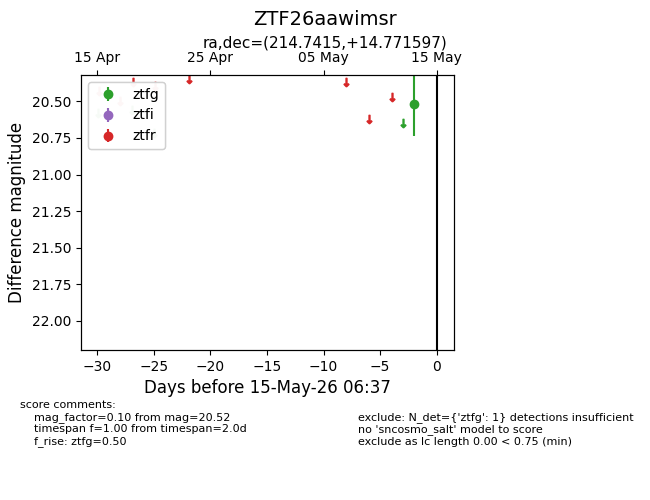
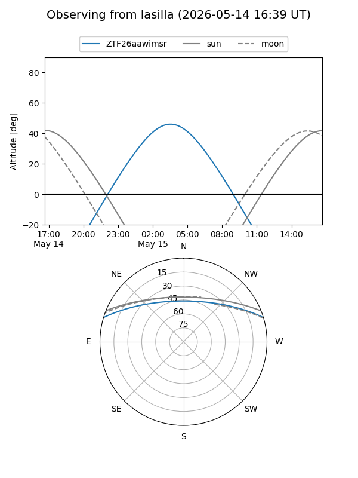
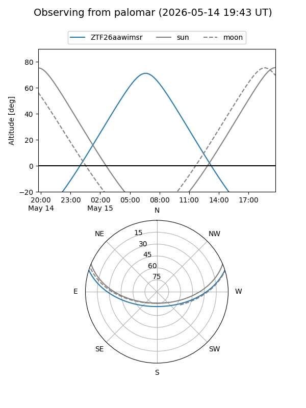

ZTF26aawimsr
Target ZTF26aawimsr at 2026-05-15 06:39
Aliases and brokers:
FINK: link
Lasair: link
ALeRCE: link
alt names
ZTF26aawimsr (ztf,fink_ztf)
Coordinates:
equatorial (ra, dec) = 214.7415,+14.77160
equatorial (HMS+DMS) = 14:18:57.96,+14:46:17.75
galactic (l, b) = (6.1080,+66.18199)
Flags:
Photometry:
last ztfg=20.52
1 ztfg detections
Lightcurve

Visibility


Additional plots